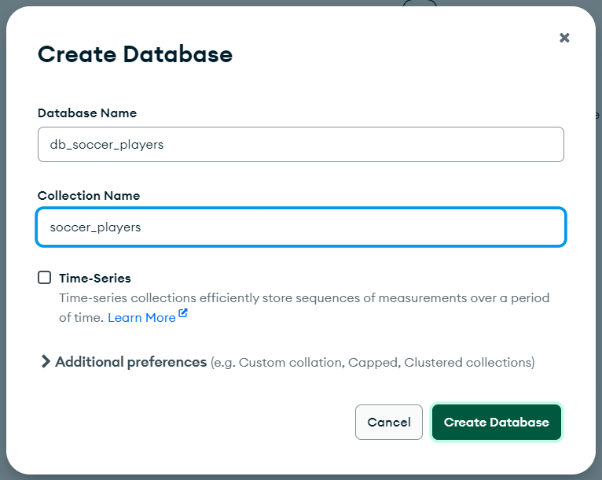

Learning Goals
At the end of this Tutorial, you will be able to:
- Use the Compass app to create a database and collection in MongoDB.
- Import a JSON file into a collection to create documents in a collection.
- View your data with the MongoDB extension for VS Code.
About MongoDB Compass
The free Compass app provides an easy-to-use interface for interacting with databases, collections and documents on MongoDB Atlas.
You downloaded and installed Compass in a previous Tutorial using your provided connection string.
Creating a database and collection
Follow the steps below:
- Download the soccer_players.json file.
- Launch the Compass app and connect it to your account on MongoDB Atlas. You should see a screen similar to that below.

- In the left column, beside the Databases heading, click the plus (+) icon. 
- Enter the names for your database and collection. For example, db_soccer_players and soccer_players. You can add further collections to your new database later, if required.
- Click the Create Database button.
Now, you are ready to add data to your database and collection.
Importing JSON data
With the soccer_players collection selected in the left column:
- Click the dropdown arrow at the right of the ADD DATA button and select Import JSON or CSV file.

- Select the soccer_players.json file and, on the next screen, click the Import button.

- You should now see a screen similar to the following.

Note that MongoDB has automatically added a field named _id to each document.
Viewing data with VS Code extension
To view your database and collection with the VS Code extension for MongoDB, follow the steps below:
- In the left Activity Bar, click the MongoDB extension icon.
- Click and expand the db_soccer_players database, soccer_players collection, and individual documents. See the sample screen below.

In the next Tutorial, you will build an Express app to work with this MongoDB data.